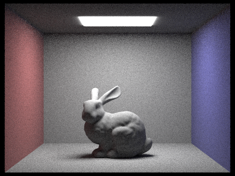
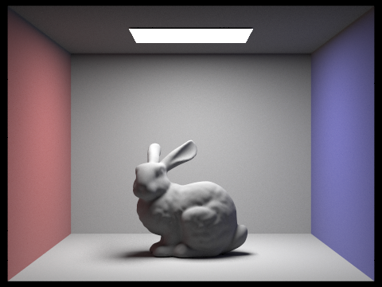

In part 1, we generated a ray from camera to image plane and transformed it to the world space. We also wrote ray-triangle and ray-sphere intersection tests, which are building blocks for ray-tracing rendering algorithms. In part 2, we implemented BVH to speed up ray intersection computation. In part 3, we implemented direct ray tracing. In part 4, we implemented indirect ray tracing. In part 5, we implemented adaptive sampling.
Our write-up can be found here.
Part 1: Ray Generation and Intersection
In task 1, we generated a ray from camera to image plane and transformed it to the world space. In task 2, we uniformly sampled rays across every pixel on the image plane and averaged their evaluated color as the final color for the pixel. In task 3, we wrote a ray-triangle test which composes of: 1) ray-plane intersection; 2) point-in-triangle test using barycentric coordinates. In task 4, we wrote a ray-sphere test which uses the quadratic formula for the roots of quadratic equations.

|

|
Part 2: Bounding Volume Hierarchy
The BVH algorithm partitions sets of objects into disjoint subsets. If given primitives is larger than the max_leaf_size, we need to new an internal node which contains a bounding box, left and right children node and recursively split set of primitives in two subsets. When the the number of given primitives is smaller or equal to max_leaf_size, we store the object reference in each leaf node and stop recursion. As for picking the splitting point, we first chose the axis with the largest cover range. Then we sorted the primitives based on their positions on this axis, and pick up the median object, using the median index as our splitting point.

|

|
|
|

|
BVH performance comparison on peter.dae:
Without BVH:
Building BVH: 0.0004 sec
Render: 31.6675 sec
With BVH:
Building BVH: 0.0222 sec
Render: 0.0443s
Part 3: Direct Illumination
Direct Lighting with Uniform Hemisphere Sampling:
We first casted a ray from the camera, through a specific pixel, and into the scene.
Once it intersects something in the scene, we do this by calculating how much light is reflected back towards the camera at this intersection point.
In order to estimate how much light arrived at the intersection point, we used Monte Carlo estimator to integrate over all the light arriving in a hemisphere around the point of interest.
After uniformly sampling incoming ray directions in the hemisphere, we used bvh->intersect() to check whether these incoming rays from wi intersect with light source.
Direct Lighting by Importance Sampling Lights:
For importance sampling lights, the major difference from uniform hemisphere sampling is that we are not adopting a constant probability but sampling from probability distribution.
In other words, we only sample from lights, not uniformly in a hemisphere. If we cast a ray in this direction and there is no other object between the hit point and the light source,
then we know that this light source does cast light onto the hit point. This time we used light->sample_L() to sample incoming rays and then add all the irradiance on intersection point.
|

|
|
Uniform hemisphere sampling: more noises; blurry light;
Light sampling: fewer noises; neat scene;

|
|
|
|

|
Part 4: Global Illumination
Walk through your implementation of the indirect lighting function. The function at_least_one_bounce_radiance is the main implementation work.At a high level, it should call the one_bounce_radiance function, and then recursively call itself to estimate the higher bounces. This recursive call should take one random sample of a direction based on the BSDF at the hit point, trace a ray in that sample direction, and recursively call itself on the new hit point.
at_least_one_bounce_radiance(r, isect) {
Vector3D bsdf_f = isect.bsdf->sample_f(w_out, &w_in, &pdf);
//if depth == max_ray_depth, there is always one_bounce_radiance
//if depth < max_ray_depth, and path doesn't terminate randomly with Russian Roulette
if ((r.depth == max_ray_depth) || (r.depth > 0 && coin_flip(prob))) {
L_out += one_bounce_radiance(r, isect);
//transfer w_in from object coordinate to world coordinate
world_w_in = o2w*w_in;
//construct a new ray in world coordinate
w_in_ray = Ray(hit_p , world_w_in, (int)r.depth-1);
if(bvh->intersect(w_in_ray, &in_isect)){
//recursively run this function
L_out += at_least_one_bounce_radiance(w_in_ray,in_isect)*pdf;
}
}
return L_out;
}
|

|
|
|
|
|
Pick one scene and compare rendered views first with only direct illumination, then only indirect illumination. Use 1024 samples per pixel.
After comparing these two images with only direct and indirect illumination, we can see that direct illumination makes up most of the global illumination and
indirect illumination is much softer and ligher than direct one. Since we don't consider light reflected by other stuff in direct illumination,
the shadow of bunny is really dark. However, in indirect image, color is more uniform.
|
|
|
For CBbunny.dae, compare rendered views with max_ray_depth set to 0, 1, 2, 3, and 100 (the -m flag). Use 1024 samples per pixel.
Where depth =0, we can only see the light source. With the increasing of max_ray_depth, the shadow on bunny is getting lighter and lighter,
which means there is more incoming reflected light, but the contribution of higher bounces decreases exponentially, so the difference between depth=2 and depth=3 is not very obvious.
|
|
|
|
|
|
Pick one scene and compare rendered views with various sample-per-pixel rates, including at least 1, 2, 4, 8, 16, 64, and 1024. Use 4 light rays.
|
|
|
|
|
|
|
|
|
|
|
Part 5: Adaptive Sampling
In part 5, we implemented adaptive sampling using two helper variables sample_sum and
sample_squared_sum, which is the s1 and s2 mentioned in the part 5 guideline. We update
these two variables as we generate new pixel ray samples and use them to compute the indicator
I. And the test whether it lies in the product of maxTolerance and mean. If so, we break
out of the for loop and divide the accumulated radiance by the sample count so far.

|
|
We can see from the rate image that the three walls and the floor converges very quickly. This is reasonable since they receive direct strong radiance from the light source on the ceiling, making other lights bounce on them less important.
The ceiling converges very slowly because there is hardly any direct lights bounce on it. Most of the radiance it receives is from more than one bounces.
Similar observation applies on the bunny. The surfaces with top pointing normal converges quickly as most of the radiances come from the light source. However, other surfaces converge slowly because they are not directly lighted and need to be updated according to more than one bounces.
Contribution
Yang Huang: Yang worked with Juntao on task 1, 2, 3, 4 and she wrote writeup on task 2, 3, 4. Juntao Peng: Juntao worked with Yang on task 1, 2, 3, 4, 5 and he wrote writeup on task 1, 5. He also helped debug Yang's code in part 2, 3, 4, 5.